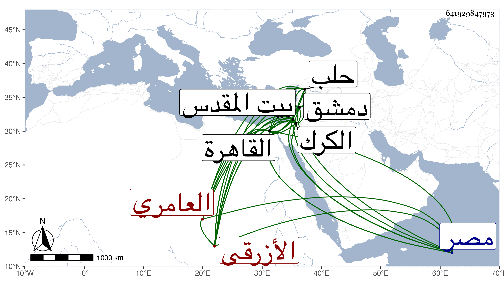

0902Sakhawi.DawLamic.ITO20230111-ara1.EIS1600.641929847973
Biography ID: 641929847973
180
أحمد بن عيسى بن موسى بن عيسى بن سليم أو سالم وجمع المقريزي بينهما فقال سليم ككثير بن سالم بن جميل ككبير أيضا ، وزاد بن راجح : بن كثير ابن مظفر بن علي بن عامر العماد أبو عيسى بن الشرف أبي الروح بن العماد أبي عمران الأزرقي العامري المقيري بضم الميم ثم قاف مفتوحة وآخره راء مصغر نسبة للمقبري قرية من أعمال الكرك الشافعي أخو العلاء علي . ولد في شعبان سنة إحدى وقيل اثنتين وأربعين وسبعمائة بكرك الشوبك وحفظ المنهاج وجامع المختصرات وغيرها واشتغل بالفقه وغيره وقدم مع أبيه وكان قاضي الكرك القاهرة بعد الأربعين فسمع بها من أبي نعيم الأسعردي وأبي المحاسن الدلاصي وأبي العباس أحمد بن كشتغدي ومحمد بن إسماعيل الأيوبي في آخرين منهم الحافظ المزي ، وبالقدس من البياني وغيره ، وقدم القاهرة غير مرة واستقر في قضاء الكرك بعد أبيه وكان كبير القدر فيه محببا إلى أهله بحيث أنهم لم يكونوا يصدرون إلا عن رأيه فلما سجن الظاهر برقوق به قام هو وأخوه في خدمته ومساعدته ومعاونته فلما خرج وصلا معه إلى دمشق فحفظ لهما ذلك فلما تمكن أحضرهما إلى القاهرة واستقر بهذا في قضاء الشافعية وبأخيه في كتابة السر وذلك في رجب سنة اثنتين وتسعين فباشر بحرمة ونزاهة وصيانة ودخل معه حلب واستكثر في ولايته من النواب وشدد في رد الرسائل وتصلب في الأحكام فتمالأ عليه أهل الدولة وألبوا حتى عزل في أواخر سنة أربع وتسعين بالصدر المناوي وأبقى السلطان معه تدريس الفقه بالصلاحية المجاورة للشافعي والحديث بجامع طولون ونظر وقف الصالح بين القصرين مع درس الفقه واستمر إلى أن أشغرت الخطابة بالمسجد الأقصى وتدريس الصلاحية هناك فاستقر به فيهما وذلك في سنة تسع وتسعين فتوجه إلى القدس وباشرهما وانجمع عن الناس وأقبل على العبادة والتلاوة حتى مات في سابع عشر أو يوم الجمعة سابع عشرين ربيع الأول سنة إحدى بعد أن رغب في مرض موته عن الخطابة لولده الشرف عيسى ولكن لم يتم له ، وكان ساكنا كث اللحية أثنى عليه ابن خطيب الناصرية ، ونقل شيخنا عن التقي المقريزي أنه حلف له أنه ما تناول ببلده ولا بالديار المصرية في القضاء رشوة ولا تعمد حكما بباطل انتهى ، والمقريزي ممن طول ترجمته في عقوده وهو أول من كتب له من القضاة عن السلطان الجناب العالي بعد أن كان يكتب لهم المجلس وذلك بعناية أخيه كاتب السر فإنه استأذن له السلطان بذلك واستمر لمن بعده وقد كانت لفظة المجلس في غاية الرفعة للمخاطب بها في الدولة الفاطمية ثم انعكس ذلك في الدولة التركية وصار الجناب أرفع رتبة عن المجلس ولذا وقع التغيير . أفاده شيخنا في إنبائه وقال إنه حدث ببلده قديما ولما قدم القاهرة قاضيا خرج له الولي العراقي مشيخة سمعها عليه شيخنا بل قرأ بعضها وكذا سمع عليه غير واحد ممن أخذنا عنه .
